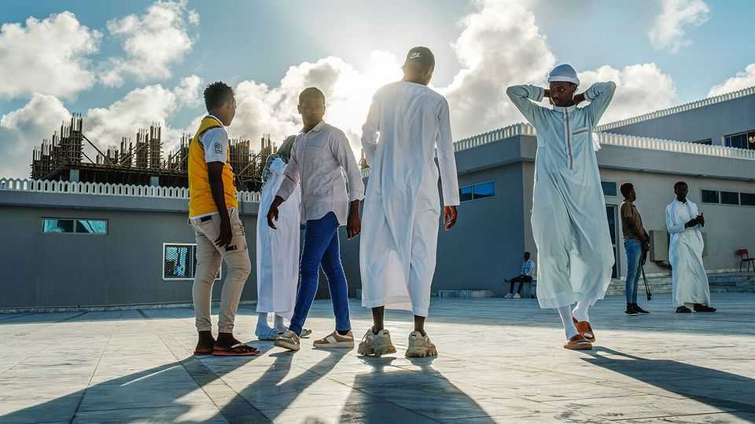
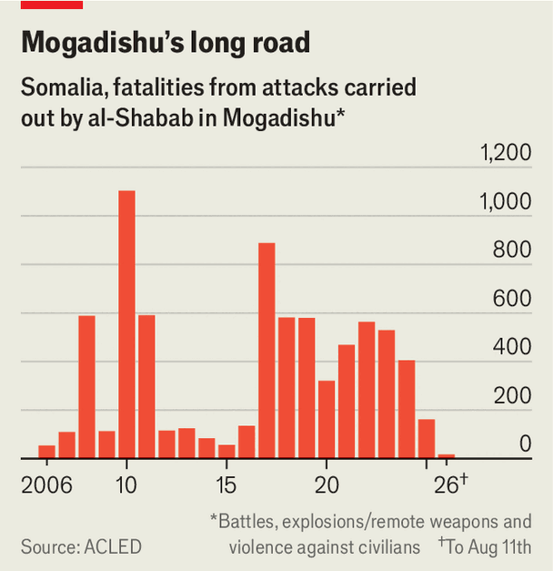
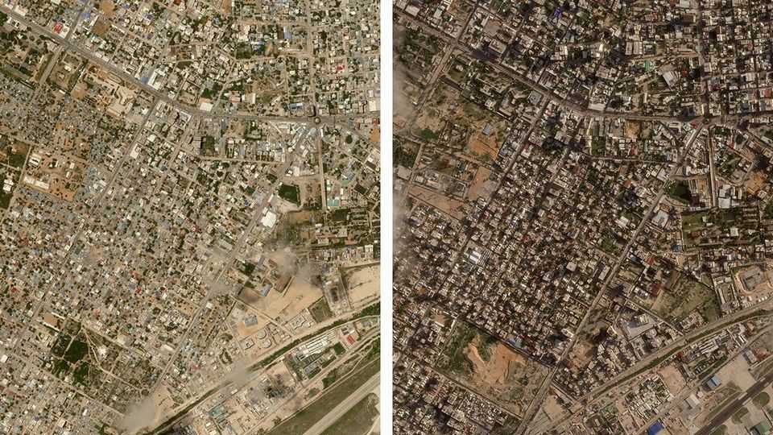
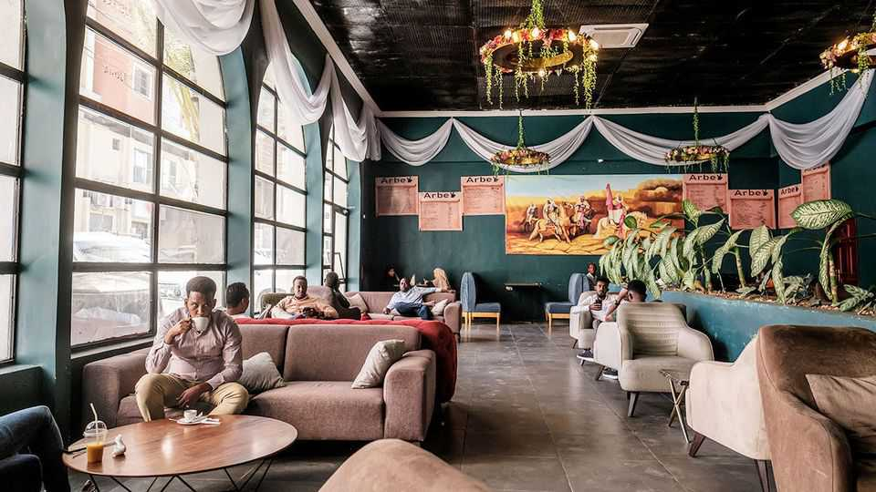

Mogadishu no longer deserves its deadly reputation
Why security in the Somali capital is improving

Aug 13th 2026
One evening six years ago Saakin Abdi, a young civil servant, enjoyed an ice-cream in central Mogadishu. Back then, residing in the Somali capital meant living with the knowledge that at any moment you could be the next victim of al-Shabab, al-Qaeda’s richest and deadliest affiliate. The next evening, a friend of Ms Abdi’s was in the same ice-cream parlour when a militant burst through the door and blew himself up. Her friend and six others were killed. They were among at least 320 people who died in al-Shabab attacks in the city in 2020.
Mogadishu has been synonymous with violence ever since Somalia’s central state collapsed in the 1990s. Yet in recent years it has undergone a quiet transformation. Al-Shabab’s attacks in the city have fallen from 144 in the third quarter of 2022, when Hassan Sheikh Mohamud took office as president, to just five in the second quarter of this year. Data collected by the Armed Conflict Location and Event Data project (ACLED), a monitoring group, suggest the number of deaths in Mogadishu linked to al-Shabab is on track in 2026 to be the lowest since the group emerged in the mid-2000s (see chart).

“This is the biggest achievement of Hassan Sheikh Mohamud’s administration,” says Omar Mahmood of the International Crisis Group (ICG), a think-tank. Residents used to avoid venturing out after dark, because “al-Shabab, or those fighting it, might kill you,” recalls Ms Abdi. Today, dozens of new cafés are open past midnight, thronged with young Somalis posting videos on TikTok and Instagram. On July 1st Mr Mohamud, who has survived multiple assassination attempts including one in Baidoa, the seat of government of South-West state, earlier this year, marked Somalia’s independence day by giving an unprecedented public address at one of Mogadishu’s most frequently targeted junctions. Hundreds joined him.
That is a marked change from the late 2010s, when “we never knew if we’d return home alive when we went out in the morning,” recalls a Somali MP. An official says he survived six different explosions after joining the government in 2014. A lorry bomb in 2017 killed almost 600 people.

The fruits of better security are plain to see. “Business is booming,” says Gamal Hassan, the commerce minister. New buildings are going up at a frenetic pace. The district around the airport, in particular, has grown much denser (see satellite images). Dahab Tower, a 26-floor confection of luxury flats, a mall, a gym and a mosque, is due to open this year. It sits close to the spot where, in 1993, the bodies of two American soldiers were dragged through the streets after militiamen shot down a Black Hawk helicopter. Nearby is Beydan Coffee, a thriving pan-African chain founded by a Somali who returned from Sweden in the 2010s.

What explains the lull in attacks is less obvious. The government boasts that, in the words of a former intelligence officer, it has “completely closed the doors” on al-Shabab. Mr Mahmood of the ICG credits “prosaic” measures such as the spread of CCTV cameras, and an electronic database that police equipped with iPads use to identify civilian cars at checkpoints. Plainclothes intelligence officers have been deployed in large numbers.
Turkey, the staunchest foreign backer of Mr Mohamud’s government, has played a big role. “It’s the Turks,” says a Western diplomat in Mogadishu, asked to explain improved security. Under Recep Tayyip Erdogan, Turkey’s president, the country has become Somalia’s most important investor, with business interests including the airport and the port, a new spaceport and offshore oil-and-gas exploration, all clustered in or around the capital. Since Turkey opened its largest overseas military base in Mogadishu in 2017, its forces have trained Somali soldiers, conducted drone strikes and joined Somalia’s national army in operations against al-Shabab.
How much this has weakened al-Shabab beyond the capital is unclear. Since Donald Trump returned to office in 2025, Turkish and Somali air strikes outside Mogadishu have been accompanied by the most intensive American aerial campaign in Somalia’s history. Yet the federal government’s territorial reach has barely budged in 18 months. Much of Mogadishu’s hinterland remains under al-Shabab’s control.
Some analysts suspect the group may be purposefully restraining itself. “Al-Shabab itself has changed its strategy and tactics,” argues Afyare Abdi Elmi of City University of Mogadishu. Fewer mass-casualty attacks in the capital may be a bid to soften its image. Al-Shabab is benefiting from a status quo where it can extort businesses in the capital largely unchecked. For now, it may see little cause to step up attacks.
Yet there are several reasons to mistrust the calm. The first is a stand-off over delayed elections between the president and his rivals. In June brief clashes between the army and militias linked to two opposition leaders killed at least 13 people.
Even more worrying is the president’s escalating confrontation with Somalia’s regional states. In March Mr Mohamud sent troops into Baidoa to depose the governor. In recent weeks he has been trying to mobilise local forces against the leadership of the northern state of Puntland. “They started well against al-Shabab in 2022,” says Ahmed Koshin, a former defence official, of Mr Mohamud’s government. “But since then they’ve put the state’s resources into political infighting.”
Those resources are shrinking. On July 1st America said it would no longer support UNSOS, the UN’s logistics body responsible for supplying the African Union peacekeepers that have propped up the federal government since 2007. European sources say the EU will not plug the gap, leaving the peacekeeping mission in the lurch. Without an alternative, Mr Mahmood reckons it could fold as early as 2027.
Somali officials appear confident that the country’s strategic position at one of the two gateways to the Red Sea means foreign partners will not step back entirely. A jihadist takeover of Mogadishu remains remote. But it would take much less to shatter the newfound sense of security. “You never know,” says Ms Abdi. “It sometimes feels like things can go back.”■
Sign up to the Analysing Africa, a weekly newsletter that keeps you in the loop about the world’s youngest—and least understood—continent.